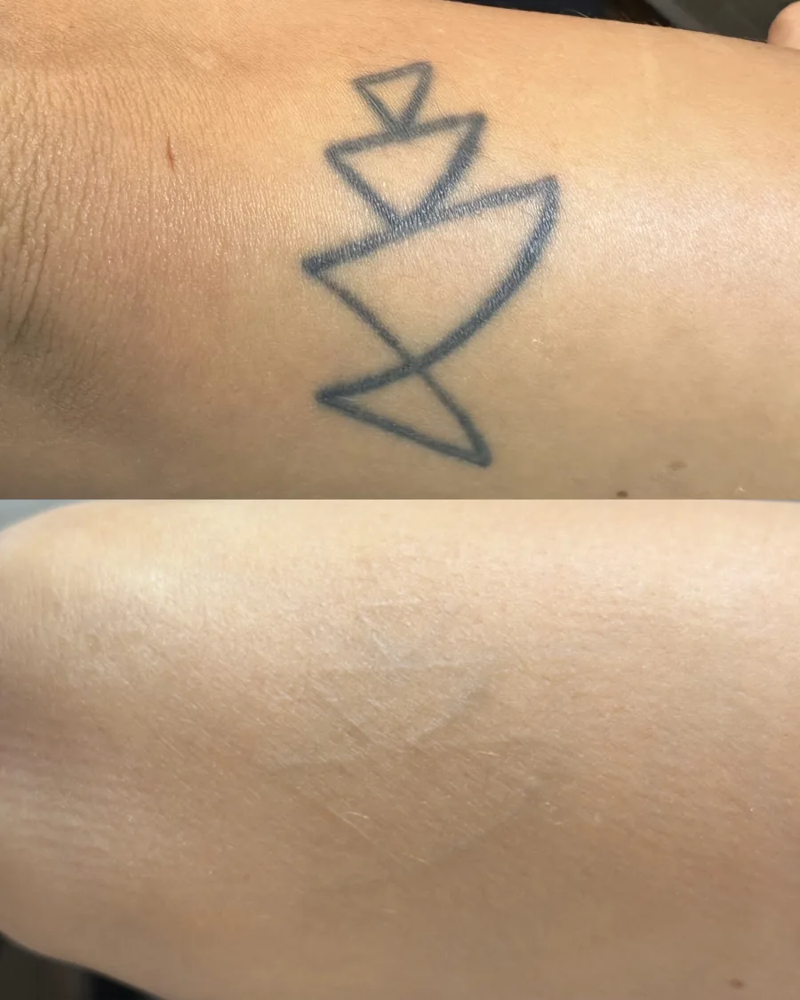
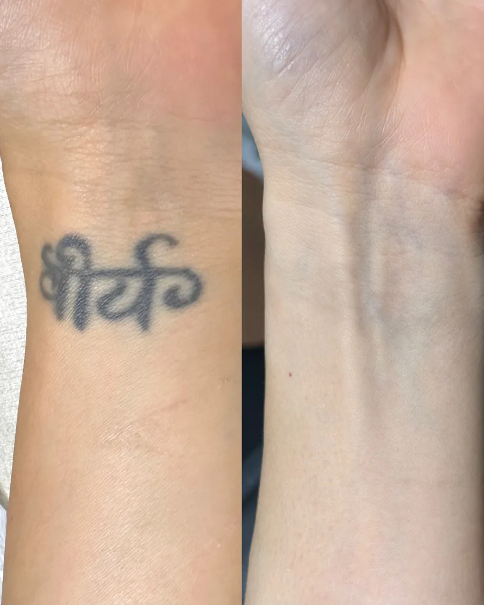

Como funciona o clareamento
Sobre o serviço
A remoção a laser é um processo de clareamento progressivo do pigmento presente na pele. Durante as sessões, o laser atua sobre as partículas de tinta e, depois da aplicação, o próprio organismo continua participando desse processo ao longo das semanas.
Poliana avalia fatores como:
- Cor do pigmento
- Quantidade de tinta
- Saturação
- Profundidade aparente
- Região do corpo
- Tempo da tatuagem
- Condições da pele
- Cicatrização
- Histórico de sessões anteriores
- Resposta individual de cada cliente
No protocolo habitual da Poliana, são respeitados aproximadamente 90 dias entre as sessões, sempre de acordo com a evolução da pele.
Sequência de resultados




